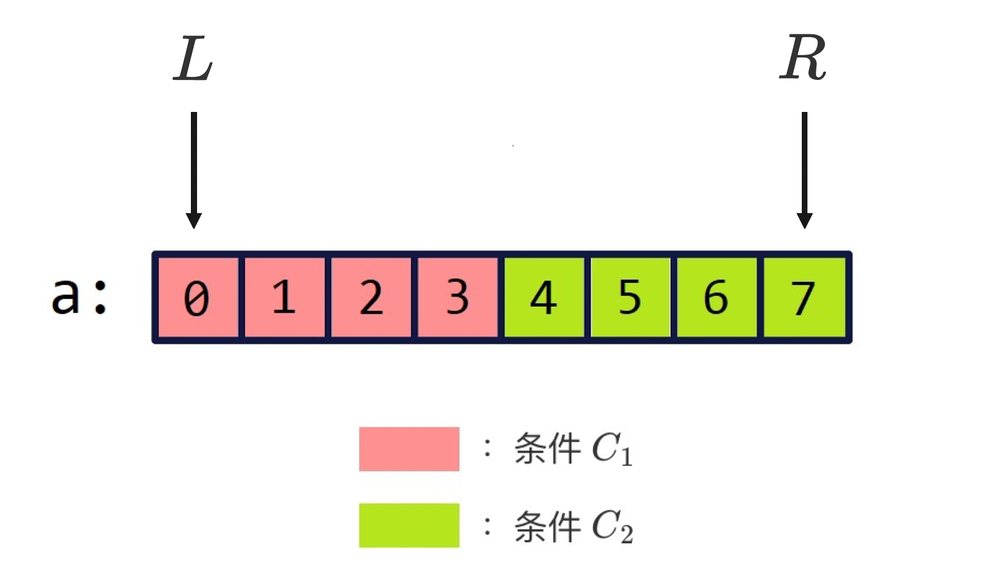
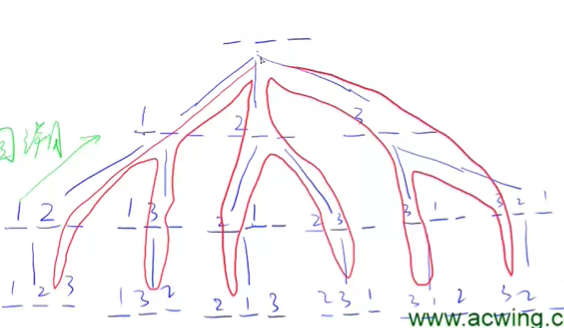

常用库函数列表
头文件
在算法竞赛中常常设计到各种库函数，头文件一句即可引入较多常用头文件
#include <bits/stdc++.h>
其中包括iosteam，vector，utility，algorithm等，以下对这些库常用的函数进行讲解
vector[可变数组]
-
初始化
vector<int> a;//定义一个vector 未初始化 输出>0 vector<int> a(3);//定义一个长度为3的vector 未初始化 输出>0 0 0 vector<int> a(10, 3); //定义一个长度为10，且每个数赋值为3 //将向量b中从下标0 1 2（共三个）的元素赋值给a，a的类型为int型 //它的初始化不和数组一样 vector<int>a(b.begin(),b.begin+3); -
遍历方法
int main () { vector<int> a; for (int i = 0; i < 10; i ++) { a.push_back(i); } //三种遍历vector的方法 for (int i = 0; i < a.size(); i ++) { cout << a[i] << ' '; } cout << endl; for (auto i = a.begin(); i != a.end(); i ++) { cout << *i << ' '; } cout << endl; //C++11的新语法 for (auto x : a) { cout << x << ' '; } cout << endl; return 0; } -
size()
a.size()， 返回元素个数
-
empty()
a.empty() 判断a是否为空，空则返回true，返回bool值
-
front(),back()
a.front() 返回第一个元素
a.back() 返回组后一个元素
-
push_back(),pop_back()
a.push_back() 在a的最后一个向量中插入一个元素
a.pop_back() 删除a的最后一个元素
-
begin(),end()
a.begin() 获取向量a的起始地址 a.begin()+2 表示a[2]的地址
a.end() 获取向量a的结束地址
pair [捆绑成对]
-
初始化
类似于两个元素的结构体
//俩种方法初始化 pair<string,int> p("hello",1); pair<string,int> p p = make_pair("hello",1); typedef pair<int, int> PII -
first(),second()
p.first() 取第一个元素
p.second() 取第二个元素
-
make_pair()
初始化一个pair
Algorithm[常用算法函数]
-
sort()
实现从大到小排序
sort(起始地址，结束地址，比较函数) 可以通过修改对比函数，修改排序顺序或者实现结构体排序
-
__gcd
得到最大公约数
int k=__gcd(n,m)
-
max(),min()
max(a,b);//返回最大值 min(a,b);//返回最小值
-
swap()
swap(a,b) 交换ab的值
-
lower_bound(),upper_bound()
二分查找，使用前需要先排好序
lower_bound() 返回数组中第一个大于等于x的数的地址
upper_bound() 返回数组中第一个大于x的数的地址
-
reverse()
倒置
reverse(a.begin(),a.end())
-
find()
//在a中的从a.begin()（包括它）到a.end()（不包括它）的元素中查找10， //若存在返回其在向量中的位置 find(a.begin(),a.end(),10);
-
next_permutation(),prev_permutation()
全排列函数。next_permutation(num,num+n)函数是对数组num中的前n个元素进行全排列，同时并改变num数组的值。数组中的数必须先升序排序
#include <iostream> #include <algorithm> using namespace std; int main() { int num[3]={1,2,3}; do { cout<<num[0]<<" "<<num[1]<<" "<<num[2]<<endl; }while(next_permutation(num,num+3)); return 0; } 123 132 213 231 312 321 ---->>>不断增大的全排列，并且是不断交换数组中的值
队列 queue
-
初始化
queue
p priority_queue
q; //默认是大根堆 //定义小根堆
小根堆：priority_queue <类型,vecoter <类型>,greater <类型» 变量名
-
关于大根堆小根堆
#include <iostream> #include <queue> #include <string> using namespace std; struct Pair { int id; string data; }; bool operator<(Pair p1,Pair p2){ return p1.id<p2.id; } int main() { //大根堆 priority_queue<Pair> tmp; tmp.push({3,"a"}); tmp.push({2,"b"}); cout<<tmp.top().data;//结果为a } ////////////////// struct Pair { int id; string data; }; bool operator<(Pair p1,Pair p2){ return p1.id>p2.id; } int main() { //小根堆 priority_queue<Pair> tmp; tmp.push({3,"a"}); tmp.push({2,"b"}); cout<<tmp.top().data;//结果为b } -
size
返回队列长度
-
empty
判断队列是否为空
-
push
往对尾插入元素
-
pop
把对头元素弹出队列
-
front,back
q.front()返回队头元素，back返回队尾元素
栈 stack
-
初始化
stack
s -
size
返回栈长度
-
push
往栈顶放入元素
-
top
返回栈顶元素
-
pop
弹出栈顶元素
双向队列 deque
-
初始化
deque
dq; -
常用函数
dq.size(); //返回这个双端队列的长度 dq.empty(); //返回这个队列是否为空，空则返回true，非空则返回false dq.clear(); //清空这个双端队列 dq.front(); //返回第一个元素 dq.back(); //返回最后一个元素 dq.push_back(); //向最后插入一个元素 dq.pop_back(); //弹出最后一个元素 dq.push_front(); //向队首插入一个元素 dq.pop_front();//弹出第一个元素 dq.begin(); //双端队列的第0个数 dq.end(); //双端队列的最后一个的数的后面一个数
string 字符串库
-
初始化
string a=“ac”
-
substr（）
a.substr(2,5) 从第三个字符开始，取5个字符
-
c_str()
s.c_str() 返回s的头指针
-
push_back()和insert()
a.push_back(‘a’) 在尾部插入一个字符
string str2=“hello”; string s2=“weakhaha”; str2.insert(0,s2,1,3); //将字符串s2从下标为1的e开始数3个字符，分别是eak，插入原串的下标为0的字符h前
-
size()length()
都是返回数组字母个数，都是返回的无符号整型，要加减先转化为int型
-
memset
可以用于对数组空间快速赋值
int a[5];
memset(a,0,sizeof(a));
-
strncpy 和strcpy
strcpy(string, str1); 把str字符串复制到string上
strncpy(string, str1，n) ; 把str字符串前n个字符复制到string上
-
strcat和strncat
将两字符串拼接到一起
-
strcmp
字符串比较。相同返回0，大于为1，小于为-1.区分大小写。不区分大小写用stricmp
unordered_map
-
初始化
#include <unorder_map>
unordered_map <string,int> string—-> int
unordered_map是一个将key和value关联起来的容器，它可以高效的根据单个key值查找对应的value。 key值是唯一的，查询单独key效率高于map，map会自动进行排序
-
遍历
可以利用vector类似的auto，遍历方式
#include <iostream> #include <unordered_map> using namespace std; int main() { string key="123"; int value=4; unordered_map<string, int> unomap;//创建一个key为string类型，value为int类型的unordered_map unomap.emplace(key, value);//使用变量方式，插入一个元素 unomap.emplace("456", 7);//也可以直接写上key和value的值 cout<<unomap["123"];//通过key值来访问value cout<<endl; for(auto x:unomap)//遍历整个map，输出key及其对应的value值 cout<<x.first<<" "<<x.second<<endl; for(auto x:unomap)//遍历整个map，并根据其key值，查看对应的value值 cout<<unomap[x.first]<<endl; } -
删除，查找
erase(key)
find(key) 都是通过的key
cmath
-
ceil
向下取整，返回相同的数据类型，并不是返回int
-
floor
向上取整，返回相同的数据类型，并不是返回int
Acwing 826.单链表
数组模拟链表，普通指针链表，每次开辟结点需要new()动态分配，当数据量大，会造成耗费大量时间，可能会超时。
Acwing 827.双向链表
同样是采用数组模拟，节省时间。
设置头尾哨兵，不存在删除边界的问题
Acwing 828 829，模拟栈和队列
利用数组，栈只需要一个指针，队列需要两个
Acwing 836.并查集
1.将两个元素合并
2.询问两个元素是否在同一集合中
每一个集合用有一棵树来表示,树根编号是整个集合的编号。每个节点存储他的父节点，p[x]表示x的父节点
优化：路径压缩
Acwing 840.模拟散列表（哈希表）
哈希冲突解决方法
开放寻址法
拉链法
整数哈希 h(k)=(k mod m + m) mod m，m为槽的个数
在拉链法中，设输入n个数，m的取值为大于等于n且最接近n的质数，能有效降低哈希冲突的概率，需要另外开辟静态指针空间
在开放地址法中，设输入n个数，m的取值为大于等于 2n(3n)且最接近2n的质数，无需其余空间
memset 函数解读
常用于数组初始化，是对字节而言的，void *memset(void *str, int c, size_t n)
对于str所指内存块中的每一个字节，设置成为c
Acwing 841.字符串哈希
- 任何一个字符串不能映射成0
- 鉴定使用经验值是不会出现冲突的，p进制的p为131或者13331，mod 2^64，使用无符号longlong可以避免取模
核心思想是把字符串看成p进制数
char str[N];.//n为字符串最大长度
unsigned long long h[N],p[N];
加入读入一个长度为m的字符串，则str 1-m 保存字符串，h 1-m保存各个字串的哈希值，p保存的是不同位上的权值 即p的x次方。
Acwing 789. 二分查找

-
模板一 我们最终要找的边界是一个性质在右半区符合，在左半区不符合的性质。我们要找符合的右半区的左边界点。判断check（mid）,如果mid符合条件Mid是在右半区符合性质的半区中。要找左边界点的范围则更新为r = mid（包含Mid）。如果mid不符合条件，我们要找符合性质的左端点则l = mid + 1（已经确定mid是不符合的就从mid+1开始算）
-
模板二 我们最终找的边界是一个性质在右半区不符合，在左半区符合的性质。并找到符合性质的左半区的右边界点。对mid进行判断来获得结果：如果mid符合条件，则mid就在左半区，那么我们要找的右边界点就可以更新为（mid,r）l = mid。 如果mid不满足条件，则mid必然在右半区间，而我们要找的符合要求的左半区间性质的右端点就是（l,mid-1）。r = mid - 1;
-
模板二要防止死循环：当 r-l == 1,mid =(2l+1)/2=l(向下取整)。若check（mid）为真，则更新后的区间仍为[l，r]，没有变化陷入死循环;而mid = (r +l + 1)/2 = r，则若为真，更新完是[r,r]，退出循环；若为假，更新完则为[l,l];
Acwing 905.区间选点
-
vector
vector 是一个封装了动态大小数组的顺序容器，可以存放各类数据对象
顺序序列，动态数组
包含在
库中 主要函数：end()，begin()，clear()，push_back()，insert()，size()
-
pair
pair 是将2个数据组合成一组数据 常用到 typedef pair<int,int> PII；将两个int组合在一起，避免写结构体
包含在**
**库中 访问第一个数据用 xx.first，第二个数据用xx.second
-
<algorithm>
void sort (RandomAccessIterator first, RandomAccessIterator last, Compare comp);first：数组的起始地址。last：数组结束地址。（数组中最后一个元素的下一个地址）comp：自定义排序函数，默认升序。
Acwing 842.排列数字
把搜索顺序看成一棵树，每个叶结点就是一种全排列

Acwing 846. 树的重心
-
树是特殊的图，树的存储—->图的存储
-
无向图 可以看成有向图具有双向边
-
有向图的存储
-
邻接矩阵
二维数组，g [n][n] ，n个节点的图。g[a][b]表示点a到点b是否有链接，有权重则数值为权重
-
邻接表
每一个点开一个链表。存储指向的点，一般采用邻接表存储
#include <iostream> #include <string.h> using namespace std; const int N=100010,M=N*2; int h[N],e[M],ne[M],idx; void add(int a,int b) { e[idx]=b; //数值保存 ne[idx]=h[a]; //先连 h[a]=idx; //再断 idx++;//idx往后移 } int main() { memset(h,-1,sizeof(h)); //先把所有节点指向-1 return 0; } -


...